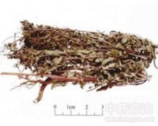

豨莶草

拼音
Xī Xiān Cǎo
别名
肥猪草、肥猪菜、粘苍子、粘糊菜、黄花仔、粘不扎
来源
本品为菊科植物豨莶Siegesbeckia orientalis L.、腺梗豨莶Siegesbeckia pubescens Makino或毛梗豨莶Siegesbeckia glabrescens Makino的干燥地上部分。夏、秋二季花开前及花期均可采割，除去杂质，晒干。
生境分布
生于林缘、林下、荒野、路边。分布于东北、华北、华东、中南、西南。
药材特点
一年生草本，高达1m以上，枝上部尤其是花序分枝被紫褐色头状有柄长腺毛及白色长柔毛。叶对生，叶片质薄，两面被短毛，沿叶脉有白色长柔毛，中部叶阔卵形至阔卵状三角形，长7～20cm，宽5～18cm，边缘有大小不等的齿，顶端短渐尖。头状花序直径2～3cm，多数，排成伞房状；外层总苞片长1～1.5cm；舌状花长约3.5mm。瘦果长约3.5mm。花期8～10月，果期9～12月。
性状
本品茎略呈方柱形，多分枝，长30～110cm，直径0.3～1cm；表面灰绿色、黄棕色或紫棕色，有纵沟及细纵纹，被灰色柔毛；节明显，略膨大；质脆，易折断，断面黄白色或带绿色，髓部宽广，类白色，中空。叶对生，叶片多皱缩、卷曲，展平后呈卵圆形，灰绿色，边缘有钝锯齿，两面皆有白色柔毛，主脉3出。有的可见黄色头状花序，总苞片匙形。气微，味微苦。
性味
辛、苦，寒。
功能主治
祛风湿，利关节，解毒。用于风湿痹痛，筋骨无力，腰膝酸软，四肢麻痹，半身不遂，风疹湿疮。
用法用量
9～12g。
化学成分
含豨莶四醇（pimar-8（14）-ene-6β-kauran-19-oic acid），尚含生物碱、苦味质。
药理作用
1：无药理作用数据
摘录
《中国药典》